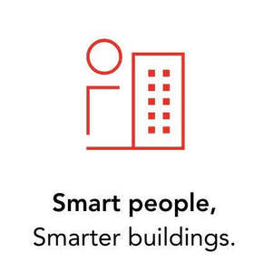

Trade Mark Journal No.2025/009 28 February 2025
UK00004156671 6 February 2025 (9,11,35,37,42)

International priority date claimed: 5 September 2024
(European Union Intellectual Property Office (EUIPO))
(019075454)
- Class 9
- Junction boxes; Distribution boards [electricity]; Jack plugs; Electric power supply sockets; Electric sockets; Plug adaptors; Power strips with movable sockets; Plugs, sockets and other contacts [electric connections]; Junction boxes [electricity]; Housings for measuring apparatus; Sensors, detectors and monitoring instruments; Electronic doorbells; Security cameras; Alarm systems; Alarm sensors; Alarm monitoring systems; Alarms and warning equipment; Locks [electric] with alarms; Safety, security, protection and signalling devices; Sensors for engines; Light sensors; Dimmers; Dimmer switches; Time switches, automatic; Wires, electric; Electrical cabling; Cable connectors; Cable adapters; Ducts [electricity]; Cable boxes (Electric -); Smart meters; Commutators; Digital weather stations; Apparatus and instruments for conducting, distributing, transforming, accumulating and regulating electricity; Electrical and electronic components; Electrical transducers; Audio testing apparatus; Uninterruptible electrical power supplies; Apparatus for monitoring electrical energy consumption; Regulated power supply apparatus; Home automation hubs; Electrical control boards; Control installations (Electric -); Electronic control units; Remote controls; Remote controls; Home automation systems; Servers for home automation; Home automation software; Electronic device software drivers that allow computer hardware and electronic devices to communicate with each other; Control software for lighting, shading and air-conditioning apparatus; Control software for access control systems; Software to control building environmental, access and security systems; Self-directed software for surveillance; Utility, security and cryptography software; Data processing equipment; Data processing systems; Access control systems (Electric -).
- Class 11
- Fans [air-conditioning]; Apparatus and installations for ventilating; Lighting apparatus; Lighting installations; Lighting apparatus.
- Class 35
- Retail and wholesale services relating to branch boxes, distribution boards, plugs, electric power supply sockets, electric sockets, plug adapters, power strips with movable sockets, plugs, sockets and other contacts [electric connections], junction boxes [electricity], housings for measuring apparatus, sensors, detectors, monitoring instruments, electronic doorbells, security cameras, alarm systems, alarm sensors, alarm monitoring systems, alarms and warning equipment, locks [electric] with alarms; Retail and wholesale services relating to safety, security, protection and signalling devices; Retail and wholesale services relating to motion sensors, light sensors, dimmers, dimmer switches, time switches, automatic, cables, electric, electrical cabling, cable connectors, cable adapters, ducts [electricity], electric cable boxes, smart meters, commutators, digital weather stations; Retail and wholesale services relating to apparatus and instruments for conducting, distributing, transforming, accumulating and regulating electricity; Retail and wholesale services relating to electrical and electronic components, electrical transducers, audio testing apparatus, uninterruptible electrical power supplies, apparatus for monitoring electrical energy consumption, regulated power supply apparatus, smart home hubs; Retail and wholesale services relating to electrical control boards, electric control installations, electronic control units, remote controls, remote control units, home automation systems, servers for home automation, home automation software; Retail and wholesale services relating to electronic device software drivers that allow computer hardware and electronic devices to communicate with each other; Retail and wholesale services relating to control software for lighting, shading and air-conditioning apparatus; Retail and wholesale services relating to control software for access control systems; Retail and wholesale services relating to software to control building environmental, access and security systems; Retail and wholesale services relating to self-directed software for surveillance; Retail and wholesale services relating to utility, security and cryptography software; Retail and wholesale services relating to data processing equipment, data processing systems, access control systems, fans [air-conditioning], apparatus and installations for ventilating, lighting apparatus, lighting installations, lighting; Retail and wholesale services relating to electronic data-processing apparatus.
- Class 37
- Installation, advice, maintenance and repair relating to branch boxes, distribution boards, plugs, electric power supply sockets, electric sockets, plug adapters, power strips with movable sockets, plugs, sockets and other contacts [electric connections], junction boxes [electricity], housings for measuring apparatus, sensors, detectors, monitoring instruments, electronic doorbells, security cameras, alarm systems, alarm sensors, alarm monitoring systems, alarms and warning equipment, locks [electric] with alarms; Installation, advice, maintenance and repair relating to safety, security, protection and signalling devices; Installation, advice, maintenance and repair relating to motion sensors, light sensors, dimmers, dimmer switches, time switches, automatic, cables, electric, electrical cabling, cable connectors, cable adapters, ducts [electricity], electric cable boxes, smart meters, commutators, digital weather stations; Installation, advice, maintenance and repair relating to apparatus and instruments for conducting, distributing, transforming, accumulating and regulating electricity; Installation, advice, maintenance and repair relating to electrical and electronic components, electrical transducers, audio testing apparatus, uninterruptible electrical power supplies, apparatus for monitoring electrical energy consumption, regulated power supply apparatus, smart home hubs, electrical control boards, electric control installations, electronic control units, remote controls, remote control units, home automation systems, servers for home automation, servers for home automation; Installation, advice, maintenance and repair relating to data processing equipment, data processing systems, access control systems, fans [air-conditioning], apparatus and installations for ventilating, lighting apparatus, lighting installations, lighting; Installation, advice, maintenance and repair relating to electronic data-processing equipment; Installation, advice, maintenance and repair relating to electrical equipment and electrotechnical installations; Installation, advice, maintenance and repair relating to building automation equipment; Advisory services relating to the installation of building automation equipment; Maintenance and repair of utilities in buildings; Providing information relating to the construction, repair and maintenance of buildings.
- Class 42
- Research, design and development services relating to branch boxes, distribution boards, plugs, electric power supply sockets, electric sockets, plug adapters, power strips with movable sockets, plugs, sockets and other contacts [electric connections], junction boxes [electricity], housings for measuring apparatus, sensors, detectors, monitoring instruments, electronic doorbells, security cameras, alarm systems, alarm sensors, alarm monitoring systems, alarms and warning equipment, locks [electric] with alarms; Research, design and development services relating to safety, security, protection and signalling devices; Research, design and development services relating to motion sensors, light sensors, dimmers, dimmer switches, time switches, automatic, cables, electric, electrical cabling, cable connectors, cable adapters, ducts [electricity], electric cable boxes, smart meters, commutators, digital weather stations; Research, design and development services relating to apparatus and instruments for conducting, distributing, transforming, accumulating and regulating electricity; Research, design and development services relating to electrical and electronic components, electrical transducers, audio testing apparatus, uninterruptible electrical power supplies, apparatus for monitoring electrical energy consumption, regulated power supply apparatus, smart home hubs; Research, design and development services relating to electrical control boards, electric control installations, electronic control units, remote controls, remote control units, home automation systems, servers for home automation, home automation software; Research, design and development services relating to electronic device software drivers that allow computer hardware and electronic devices to communicate with each other; Research, design and development services relating to control software for lighting, shading and air-conditioning apparatus; Research, design and development services relating to control software for access control systems; Research, design and development services relating to software to control building environmental, access and security systems; Research, design and development services relating to self-directed software for surveillance; Research, design and development services relating to utility, security and cryptography software; Research, design and development services relating to data processing equipment, data processing systems, access control systems, fans [air-conditioning], apparatus and installations for ventilating, lighting apparatus, lighting installations, lighting; Research, design and development services relating to electronic data processing; Research, design and development services relating to driver and operating system software, building automation and regulated power supply apparatus; Energy auditing; Recording data relating to energy consumption in buildings; Professional consultancy relating to energy efficiency in buildings; Electrical engineering services; Development, programming and implementation of electronic control systems in the context of building automation; Installation, advice, maintenance and repair relating to electronic device software drivers that allow computer hardware and electronic devices to communicate with each other; Installation, advice, maintenance and repair relating to control software for lighting, shading and air-conditioning apparatus; Installation, advice, maintenance and repair relating to control software for access control systems; Installation, advice, maintenance and repair relating to software to control building environmental, access and security systems; Installation, advice, maintenance and repair relating to self-directed software for surveillance; Installation, advice, maintenance and repair relating to utility, security and cryptography software; Installation, advice, maintenance and repair relating to home automation software.
G.I.A. NV
Representative: Arnold & Siedsma